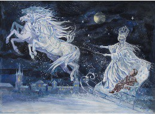
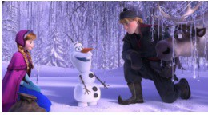

לשבור את הקרח הוא סרט פנטזיה מוזיקלי-קומי אמריקאי בהנפשה ממוחשבת של אולפני ההנפשה של וולט דיסני מ-2013. הסרט היה מועמד ל-138 פרסים וזכה ב-54 מתוכם.
פילמוגרפיה
הופק בידי: פיטר דל וצ'ו
מבוסס על: מלכת השלג (אגדה מאת הנס כריסטיאן אנדרסן)
בימוי: כריס באק וג'ניפר לי
תסריט: ג'ניפר לי
על פי סיפור מאת: כריס באק ושיין מוריס
עריכה: ג'ף דרהיים
מדינה: ארצות הברית
חברת הפקה: אולפני ההנפשה של וולט דיסני
חברה מפיצה: חברת וולט דיסני
הקרנת בכורה: 27 בנובמבר 2013
סוגה: דרמה קומית, מוזיקלי, קומדיה, התבגרות, הנפשה ממוחשבת, מבוסס יצירה ספרותית, פנטזיה
משך הקרנה: 102 דקות
פרסים: הסרט המרוויח ביותר לשנת 2013, הסרט היה מועמד ל-138 פרסים וזכה ב-54 מתוכם, ביניהם: שני פרסי אוסקר, השיר הטוב ביותר והסרט המונפש הטוב ביותר
סרטי המשך: לשבור את הקרח 2
תקציר העלילה וההבדל מהמקור
הסיפור המקורי עליו התבסס הסרט הוא "מלכת השלג", מעשייה דנית מאת הנס כריסטיאן אנדרסן משנת 1844. הסיפור מתחיל בשדון מרושע שביקש לחמוד לצון. הוא הכין מראה מיוחדת, המשקפת רק את הדברים הרעים והמכוערים בעולם, וכל הדברים הטובים והיפים משתקפים בה הפוך – רעים ומכוערים. שנשאו השדים את המראה גבוה אל השמיים, וגן העדן החל להשתקף בה, לא עמדה המראה בעומס הרשע שעליה להראות, והתנפצה למיליון רסיסים, שהתפזרו בכל העולם.
אחד הרסיסים חדר לעינו וללבו של ילד קטן בשם קאי, שגר בעיר סקנדינבית וחברתו גרדה הייתה השכנה שלו. באחד מימי החורף פגש קאי את מלכת השלג, אישה יפהפייה עטופה בלבן, שפיתתה אותו לעלות על מרכבתה ולקחה אותו איתה לארמון שלה שבקוטב הצפוני. אהבתה של גרדה לקאי גרמה לה לצאת לחיפוש ארוך ומסוכן אחריו. הסיפור מתאפיין באווירה חלומית ולפעמים אפילו ארוטית, ומבטא את המלחמה התמידית של אנדרסן בדיכאון. לסיפור מלכת השלג יצאו עיבודים רבים. בין הסרטים שמבוססים על הסיפור הוא הסרט "לשבור את הקרח" של אולפני ההנפשה של וולט דיסני מ-2013 והוא מבוסס עליו באופן רופף בלבד.
בסרט "לשבור את הקרח" מופיעות שתי אחיות נסיכות בממלכה ארנדל: אלזה האחות הבכורה, בעלת כוחות קסם מולדים המאפשרים לה ליצור קרח ושלג, ואנה האחות הצעירה. הסרט נפתח בפרולוג שמציג את הילדות אנה ואלזה משחקות בשלג שאלזה יצרה בתוך הטירה. השתיים בונות איש שלג, ואלזה מתארת אותו כחובב חיבוקים וקוראת לו אולף. במהלך המשחק, אלזה פוגעת בטעות בראשה של אנה עם כוחותיה, ואנה מאבדת את ההכרה. אלזה קוראת בבכי להורים שלהן שמגיעים בריצה ולוקחים את הבנות ליער לשבת טרולים עתיק, שם פאבי, זקן הטרולים, מרפא את אנה ומוחק מראשה כל זיכרון לקסם של אלזה. פאבי מספר לאלזה שכוחותיה יתעצמו עם השנים, ומזהיר שהפחד יהיה לה לאויב. ילד יתום בשם קריסטוף מציץ מהצד במתרחש, ואחת מהטרולים מאמצת אותו ואת אייל הצפון שלו, סוון. ההורים של הנסיכות מחליטים להסתיר את אלזה עד שתלמד לשלוט בכוחותיה. הם מפרידים בין הבנות וסוגרים את שערי הטירה.

המלך מביא לאלזה כפפות ומלמד אותה לחסום את הכוחות שלה. אנה מנסה ליצור קשר עם אלזה דרך הדלת ולגרום לה לצאת ולשחק איתה אבל לא מצליחה. אלזה ממשיכה להסתגר בחדרה, ועם השנים, כוחותיה אכן מתעצמים. כעבור עשר שנים, המלך והמלכה יוצאים להפלגה וספינתם טובעת. האחיות נשארות בודדות ועצובות בטירה. כעבור שלוש שנים נוספות, אלזה מגיעה לגיל ההכתרה. לכבוד יום ההכתרה, שערי הטירה נפתחים לתושבי ארנדל ולאורחים שמגיעים להכתרה, אלזה מתכוננת לטקס וחוששת שכוחותיה ייחשפו.
אנה פוגשת בנסיך הנס מאיי הדרום ומתאהבת בו. טקס ההכתרה עובר בהצלחה, ובמסיבה שאחריו אלזה יוזמת שיחה עם אנה. כשאנה מבקשת שכל יום ייראה ככה, אלזה אומרת לה שזה בלתי אפשרי. אנה מחזיקה את ידה של אלזה, והיא נרתעת מהמגע ומפנה לה גב. אנה נפגעת ומתרחקת ממנה ונתקלת בהנס. אנה והנס יוצאים לטייל בממלכה. הם מצהירים על אהבתם, מתארסים וחוזרים לאולם כדי לבקש את ברכתה של אלזה לנישואיהם. אלזה מתנגדת מהסיבה שאנה לא מכירה את הנס. אנה אומרת שאלזה יודעת רק להרחיק אנשים ולא יודעת מהי אהבת אמת. אלזה נפגעת ומצווה לסגור את השערים. אנה אוחזת בכף ידה של אלזה, והיא נרתעת שוב מהמגע, אבל אנה לא משחררת את ידה ובסופו של דבר שולפת את הכפפה מידה של אלזה. אלזה נסערת ויוצרת סביבה זקיפי קרח דוקרניים מול כל האורחים ההמומים. אלזה בורחת מארנדל, ובדרכה מקפיאה כל דבר שעומד בדרכה, כולל את כל ממלכת ארנדל. אנה מסבירה שמדובר בתאונה מתוך פחד ולחץ, ולוקחת אחריות עליה. אנה ממנה את הנס לאחראי ויוצאת להחזיר את אלזה הביתה. במהלך המסע הסוס נבהל, מפיל את אנה מעליו ודוהר לארנדל. הדוכס שהגיע לטקס ההכתרה מאשים את אנה ואלזה בשיתוף פעולה במטרה לפגוע בארנדל. הנס אוסף מתנדבים לחפש את אנה. הדוכס מנדב את שני שומרי הראש שלו ומצווה עליהם להרוג את אלזה אם ייתקלו בה. אלזה מטפסת להר הצפון, שם שהיא לבד והסוד שלה התגלה, היא מרגישה חופשייה מהפחד ששלט בה. היא בונה שוב את איש השלג אולף, ובונה לעצמה ארמון קרח. אולף קם לחיים והולך לטייל בהרים. אנה נכנסת לחנות דרכים, קריסטוף נכנס אחריה ומספר שהסערה מגיעה מהר הצפון. אנה מבינה שאלזה נמצאת שם, מבקשת מקריסטוף שייקח אותה לאחותה.
אנה, קריסטוף וסוון יוצאים למסע להר הצפון ופוגשים בדרך את אולף, שמציג את עצמו בשמו ומציין את חיבתו לחיבוקים. אנה נזכרת בו, מבינה שאלזה יצרה אותו, ומבקשת ממנו להוביל אותם אליה. אנה נכנסת לארמון הקרח, אלזה שמחה לראות אותה אבל שאנה מתקרבת אליה, אלזה נלחצת ודורשת מאנה לעזוב. אנה מתחננת לאלזה שתחזור איתה הביתה, אבל אלזה מסבירה שכדי להשתמש בקסם בלי לסכן אנשים, היא צריכה לגור לבד בארמון הקרח.
אנה מגלה לה שארנדל מכוסה בשלג ואלזה ההמומה מאבדת שליטה על כוחותיה, ובטעות פוגעת באנה. אנה מסרבת לעזוב את הארמון ללא אחותה, ולכן אלזה יוצרת איש שלג ענק שמגרש את אנה וקריסטוף מההר. השיער של אנה מתחיל להלבין וקריסטוף נזכר שראה את פאבי מטפל באנה בילדותה, ולוקח אותה אל הטרולים. אלזה מנסה להדחיק את הרגשות שלה ולהשתלט על הכוחות שלה, ללא הצלחה. הנס והמתנדבים מגיעים להר הצפון. הנס וחייליה של אלזה נאבקים באיש השלג הענק, ושומרי הראש של הדוכס חומקים לתוך הארמון ומקיפים את אלזה. אלזה כמעט הורגת את שניהם. הנס והחיילים נכנסים לארמון, ורואים את אלזה דוחפת את השומר אל המרפסת שמעל לצוק. הנס קורא לאלזה לא להתנהג כמו המפלצת שממנה האנשים מפחדים, ואלזה עוצרת. הנס רואה שהשומר שצמוד לקיר מכוון קשת אל אלזה ומסיט את הקשת אל התקרה, והחץ מפיל נברשת קרח מעל ראשה של אלזה. אלזה רצה, מחליקה על רצפת הקרח ומאבדת הכרה. היא מתעוררת בתא כלא, ורואה מהחלון את ארנדל מכוסה בשלג. הנס נכנס לתא ומתחנן שתפסיק את החורף, אך אלזה לא יודעת איך להפשיר את השלג. אנה, שנחלשת בינתיים, מגיעה עם קריסטוף, סוון ואולף אל הטרולים. פאבי מסביר לאנה שאחותה הכניסה קרח ללבה, ושרק מעשה של אהבת אמת יפשיר לב קפוא. קריסטוף מחזיר את אנה עד שערי הטירה, משאיר אותה בידי המשרתים ועוזב עם סוון. אנה מבקשת מהנס שינשק אותה ובכך יפשיר את לבה, אך הוא מגלה לה שהוא לא באמת אוהב אותה, ושתכנן להרוג את אלזה ולשלוט בממלכה. הנס מספר לאנשי הממלכה שאנה נישאה לו ומתה בזרועותיו באשמת אלזה וגוזר עלייה עונש מוות. הוא הולך לתא שלה כדי להרוג אותה, ומגלה שהיא ברחה. קריסטוף מבחין מההרים בסופה ומחליט לחזור לטירה. אולף מגיע לטירה ומוצא את אנה קופאת בחדר ומיואשת מאהבה. אולף גורם לאנה להבין שקריסטוף אוהב אותה באמת ואנה מתעודדת. אולף רואה את קריסטוף חוזר מרחוק, ועוזר לאנה לצאת אליו כדי לקבל ממנו את נשיקת אהבת האמת שתפשיר את לבה.
הנס מוצא את אלזה שמנסה לברוח שוב מארנדל, ומספר לה שהיא הקפיאה את לבה של אנה והרגה אותה. אלזה המזועזעת מתמוטטת והסערה פוסקת. אנה מבחינה בהנס שולף את חרבו, ובמקום להמשיך להתקדם לכיוון קריסטוף, היא רצה ונעמדת בין אלזה להנס. אנה הופכת לקרח, החרב קופאת ונשברת, ונוצר הדף שמעיף את הנס. אלזה זועקת, מחבקת את אנה ובוכה. פתאום לבה של אנה מפשיר, ומיד כל גופה שב לחיים. אולף מבין שאנה הצילה את עצמה בכך שהקריבה את חייה מתוך אהבת אמת לאחותה. אלזה מסיקה שרגש האהבה מפשיר קרח, ומצליחה להפשיר את הממלכה ולהחזיר את הקיץ.
אלזה מגרשת מארנדל את הנס והדוכס, ומעניקה לקריסטוף תואר מלכותי ומזחלת חדשה. אנה וקריסטוף מתנשקים. תושבי ארנדל מתכנסים בחצר הטירה ומריעים לאלזה המלכה ולכוחות הקסם שלה, בהם היא שולטת כעת כאשר היא כבר לא מפוחדת. אלזה מבטיחה לאנה שהשערים לא ייסגרו שוב לעולם.
אפיון דמויות
אלזה (המלכה)
אלזה היא נסיכה בת 21, במהלך הסרט היא מוכתרת למלכה. אלזה בעלת עיניים כחולות גדולות ושיער לבן כשלג, היא לובשת שמלה מלכותית בתחילת בסרט ולאחר מכן יוצרת לעצמה שמלה יותר חופשיה בהתאם לתחושת החופש שלה. היא נולדה וגדלה בארמון המלכותי בארנדל.
ייצוג הנשים: לאורך כל הסרט אלזה מוצגת כאישה שמונעת בעיקר על ידי הפחד שלה, היא נאבקת בפוטנציאל שלה להיות "אישה חזקה ויוצאת דופן". שפת הגוף של אלזה כוונה בכוונה להראות חרדה ודיכאון. כלפי חוץ, אלזה נראית מוכנה, מלכותית ומאופקת, אבל במציאות, היא חיה בפחד בגלל הסוד העצום שהיא שומרת, אלזה נולדה עם היכולת ליצור קרח ושלג, יכולת יפהפייה, אבל גם מסוכנת מאוד.
התפתחות הדמות: בתחילת הסרט אלזה מפחדת מהכוחות שלה ולא מצליחה לשלוט בהם, ולכן בורחת מהממלכה. במהלך הסרט היא לומדת לשלוט בכוחות שלה, ובסופו של דבר חוזרת לממלכה.
אנה (הנסיכה)
אנה היא נסיכה בת 18. היא בעלת עיניים כחולות גדולות ושיער ג'ינג'י, היא לובשת שמלה מלכותית בתחילת הסרט ולאחר מכן קונה שמלת חורף פשוטה יותר. היא נולדה וגדלה בארמון המלכותי בארנדל.
ייצוג הנשים: אנה היא נסיכה מודרנית, היא שולטת בסרט של עצמה, הרפתקנית וחסרת פחד, ובוודאי שלא מחכה שאיזה גיבור יעשה בשבילה את העבודה. אנה מתוארת כאישה אמיצה ודעתנית שמונעת מאהבה. הקשר שלה עם אחותה מאוד חשוב לה, לאורך הסרט היא פועלת במטרה להציל אותה ולחדש את הקשר איתה. אנה מתאהבת מאוד בקלות, אבל האהבה הגדולה ביותר שלה היא לאחותה. היא פועלת לפי איך שהיא מחליטה ולפי איך שהיא מוצאת לנכון. יחד עם זאת, אנה מתוארת כאישה לא זהירה ותמימה שנופלת במלכודות של אנשים שמנסים לפגוע בה.
התפתחות הדמות: לאורך הסרט היא לומדת להכיר את עצמה יותר טוב, הופכת להיות פחות תמימה, ונלחמת עבור המשפחה והחברים שלה. היא מתבגרת באופן משמעותי ומהווה דוגמה חיובית לצופים.
ניתוח מגדרי וייצוג נשים
מעמד האישה: אלזה ואנה הן דמויות נשיות חזקות. הן פועלות על דעת עצמן אחת למען השנייה ולמען כולם. הן לא צריכות גבר לצידן, הן מסתדרות בכוחות עצמן.
התנהגות: אלזה מביעה פחד מעצמה ומיכולות הקסם שלה ובורחת מהממלכה, בסופו של דבר היא מקבלת את עצמה כמו שהיא, היא חוזרת לממלכה ומפגינה את האהבה שלה לאחותה. אנה לוקחת את המושכות לידיים והולכת לחפש אחרי אחותה בכוחות עצמה, היא נלחמת על מה שחשוב לה ולא נותנת לאך אחד להוריד אותה מהמטרה שלה.
תלות באחרים: התלות העיקרית של אלזה ואנה היא אחת בשנייה, הן אחיות וחברות הכי טובות ותלויות אחת בשנייה. בתחילת הסרט אלזה תלויה בהוריה אבל אחרי שהם מתים היא נאלצת להסתדר בעצמה. היא בורחת ומסתתרת מכולם, ברגע שהיא משתלטת על עצמה ועל הכוחות שלה היא חוזרת למען אחותה ולמען הממלכה שלה. בתחילת הסרט ניתן לראות שאנה מאוד תלויה באחותה, אבל היא הולכת בעקבותיה ומוכנה להילחם בעצמה, לא תלויה באף אחד להגן עליה, לא מפחדת להיפגע ומאמינה בלב שלם בתוצאה חיובית, היא לא מחכה שאחרים יעשו בשבילה אלא הולכת ועושה בשביל אחרים.
הסרט לשבור את הקרח הוא סרט פורץ דרך שמעמיד במרכז גיבורה אחת יפה וחזקה עצמאית וחכמה , מבחינה היסטורית אתה לא יכול להשוות את הסרט הזה לשלגייה או לסינדרלה. בכל הסרטים הללו האישה היא פסיבית והיא נזקקת לגברים שיצילו אותה. או שלחילופין היא רעה, כלומר מכשפה. במובן הזה, 'לשבור את הקרח' הוא שינוי אדיר כשהוא מציג גיבורה שונה לגמרי מגיבורות סרטי דיסני מהתקופה הקלאסית .
הקשר לדמות גבר: אלזה היא הנסיכה הראשונה של דיסני שלא נקשרה בדמות גבר , בהמלך כל הסרט אין לה זוגיות עם שום אדם זאת כדי להדגיש את היותה דמות פמיניסטית , דמותה של אלזה מביאה שינוי לעולם הסרטים של דיסני. אנה לעומתה בתחילת הסרט נקשרת לגבר ש"הפיל אותה בקסמיו" והיא מתאהבת בו מאוד מהר בלי להכיר אותו באמת. בסוף הסרט מתברר שהוא השתמש בה למטרות האנוכיות שלו. חוץ מאלזה ואנה, כל שאר הדמויות הן גברים, וברור ששתי הנשים חיות בעולם של גברים. יש פה נשים עם כוח, אבל העולם הוא אותו עולם שאנחנו מכירים אותו במובן שגברים שולטים בו. יש פה צעד קדימה, וזה שינוי, אבל הוא לא דרמטי.
עצמאות: אלזה ואנה הן אולי הדמויות העצמאיות ביותר מכל סרטי דיסני , מגיל צעיר כאשר התייתמו מההורים שלהן הן נאלצו להתמודד עם קשיים לבד, אלזה עם הכוחות המסוכנים שלה, דבר שכנראה מאוד מבגר אותה ומעניק לה זווית ראיה חדשה על העולם, ואנה שמאז שאיבדה את הוריה גדלה לגמרי לבד ושאחותה הייתה במשבר יצאה בעצמה למצוא אותה ולהחזיר אותה הביתה בלי לחשוב פעמיים. אלזה ואנה מבינות שהן לא צריכה שום דבר ואף אחד כדי להתקדם , הן לא תלויות בשום אדם ובשום דבר, הן מקבלות החלטות ופועלות בכוחות עצמן .
הסרט "לשבור את הקרח" הוא סרט-נסיכה לכל דבר, הגיבורה שלו היא נסיכה שאפילו מחליפה כמה חליפות בגדים שמיליוני גירסאות קטנות שלהן יימכרו לקראת פורים או האלווין הבא. יחד עם זאת, בסרט הזה דיסני החליטו לשבור את כל המוסכמות, הוא ההיפך מסרטי הנסיכות הקלאסיים. הוא מוצג באנימציה ממוחשבת, ובתלת-מימד. העלילה שלו מורכבת ולפעמים אפילו דחוסה, בעיקר בהשוואה לעלילת המשפט-וחצי של רבים מהסרטים הותיקים. והכי חשוב, הוא מציג את רומנטיקת דיסני – אהבת אמת ממבט ראשון, נשיקת אהבה שמתקנת הכל, אבל לא באותה הדרך כמו בסרטי הנסיכות הקלאסים. הנסיך והנסיכה נפגשים ומתאהבים בתחילת הסרט, ומספרים לאורך שיר שלם כמה טוב לאהוב, רק כדי לגלות ששאר העולם חושב שהרעיון להתחתן אחרי שלוש דקות (אפילו מוזיקליות) של היכרות הוא די טפשי. בהמשך הסרט העמדה שלו מובהקת עוד יותר, אהבה האמת שתציל את העולם היא לא בין נסיך ונסיכה, אלא אהבה של משפחה בין שתי אחיות. מהבחינה הזאת הסרט קרוב יותר לפארודיה על סרטי דיסני הקלאסיים מאשר התרפקות עליהם.
דילמה לדיון: נשיקת אהבת אמת - רומנטיקה או משפחה?
הדילמה של יוצרי הסרט:
יוצרי "לשבור את הקרח" בחרו לשבור את המיתוס הקלאסי של דיסני. במקום ש"נשיקת אהבת אמת" תגיע מנסיך שמציל את הנסיכה, האקט המציל הוא הקרבה של אחות למען אחותה (אהבה משפחתית). האם ראוי לשבור מסורת אגדית כדי להעביר מסר מודרני?
- עונה על הציפיות של הקהל שאוהב אגדות רומנטיות.
- שומר על המסורת של סרטי דיסני הקלאסיים.
- מספק "סוף טוב" ברור ומוכר.
- מחזק את התלות של נשים בגברים להצלה.
- מעביר מסר שאהבה רומנטית היא הפתרון היחיד לכל בעיה.
- מנציח סטריאוטיפים מגדריים מיושנים.
- מעביר מסר מעצים על חשיבות המשפחה ואהבה עצמית.
- מראה שנשים יכולות להציל את עצמן ואחת את השנייה.
- מחדש ומרענן את ז'אנר האגדות.
- עלול לאכזב צופים שמצפים לרומנטיקה קלאסית.
- שובר את ה"קסם" המוכר של נסיך ונסיכה.
- לוקח סיכון שיווקי בשינוי הנוסחה המצליחה.